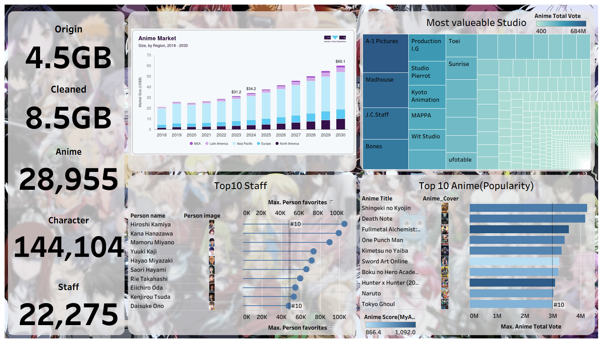
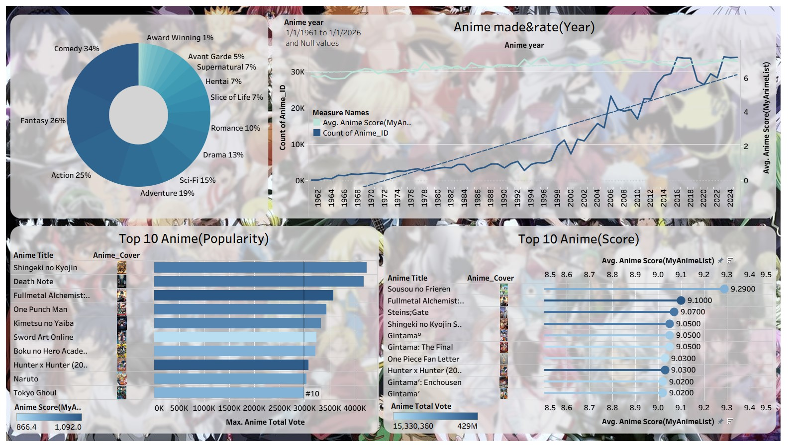

📊 Below is from early of the semester


-
Early-Semester Work – Foundational Tableau Skills
This early project focused on learning core Tableau techniques such as scatterplots, mapping, filters, and trendline analysis. I explored how different factors relate to property values and experimented with geographic visualizations using precinct-level crime data. At this stage, my work emphasized building confidence with data cleaning, joining datasets, applying basic calculations, and creating clear, functional visual dashboards.
📈 Below is from end of the semester


-
Project Overview
This project analyzes large-scale anime data from MyAnimeList to understand what drives popularity, ratings, studio performance, and staff impact in the U.S. anime market. The final output is an interactive Tableau dashboard that helps users explore trends across anime titles, genres, studios, and creative contributors over time. -
Problem Statement
The goal was to answer key business questions such as:
– What is the relationship between anime ratings and popularity?
– Which studios balance quality and production volume most effectively?
– How do staff popularity and roles relate to anime success?
– How has anime production evolved over time? -
Approach
– Cleaned and standardized multi-value fields (genres, studios, staff positions) to reduce noise and duplication.
– Built derived metrics for popularity, ratings, production volume, and staff influence.
– Used LOD calculations to ensure accurate aggregation across many-to-many relationships.
– Designed interactive dashboards with global filters (e.g., year range) for consistent cross-view analysis. -
Results & Impact
– Ratings and popularity show a positive but weak correlation, indicating success is driven by more than quality alone.
– High-volume studios tend to have average ratings, while some lower-volume studios consistently achieve higher quality.
– Popular staff and voice actors are frequently associated with high-engagement anime.
– Action, Fantasy, and Adventure dominate both production and audience interest.
– Anime production has grown rapidly over time, while average ratings remain stable.
Impact: The dashboard enables data-driven insight into content performance, talent influence, and studio strategy, supporting smarter decisions for production, licensing, and platform investment.